無人機基礎培訓研習
我對無人機的興趣始於高一參加北市資通訊應用大賽。雖然未得名，但兩三個月的練習讓我累積基礎操作經驗，也注意到其他學校使用更高階的機種，飛行穩定性更佳，激發我深入探索的動機。因此高二下注意到花蓮有研習活動後，便立即決定參加。課程涵蓋操作原理、GPS導航與空域法規，讓我理解無人機不只是遙控裝置，更能應用於農業巡田與災防監控等領域，開啟我從興趣走向專業應用的第一步。
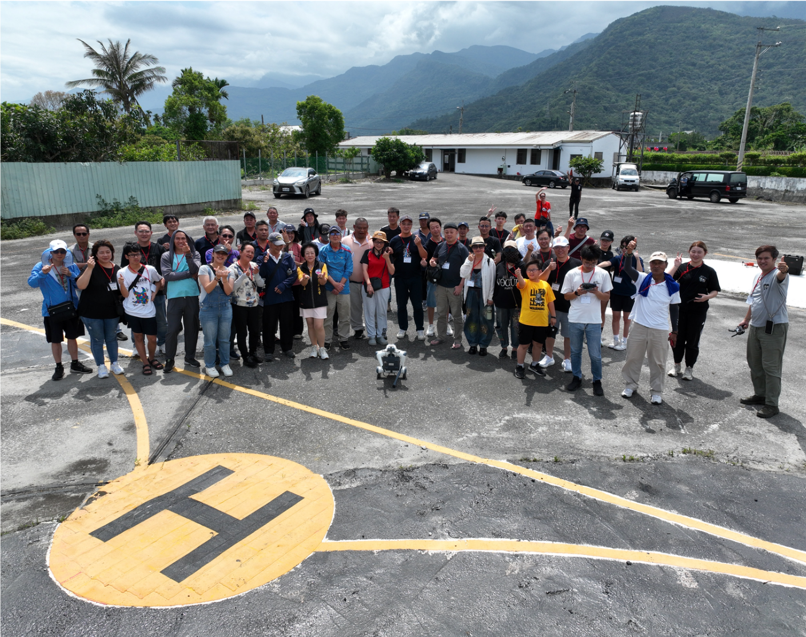 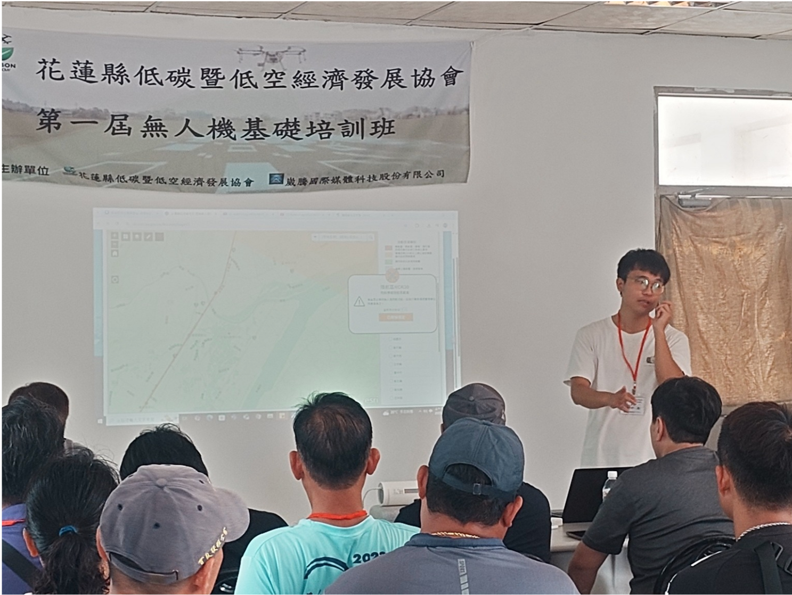 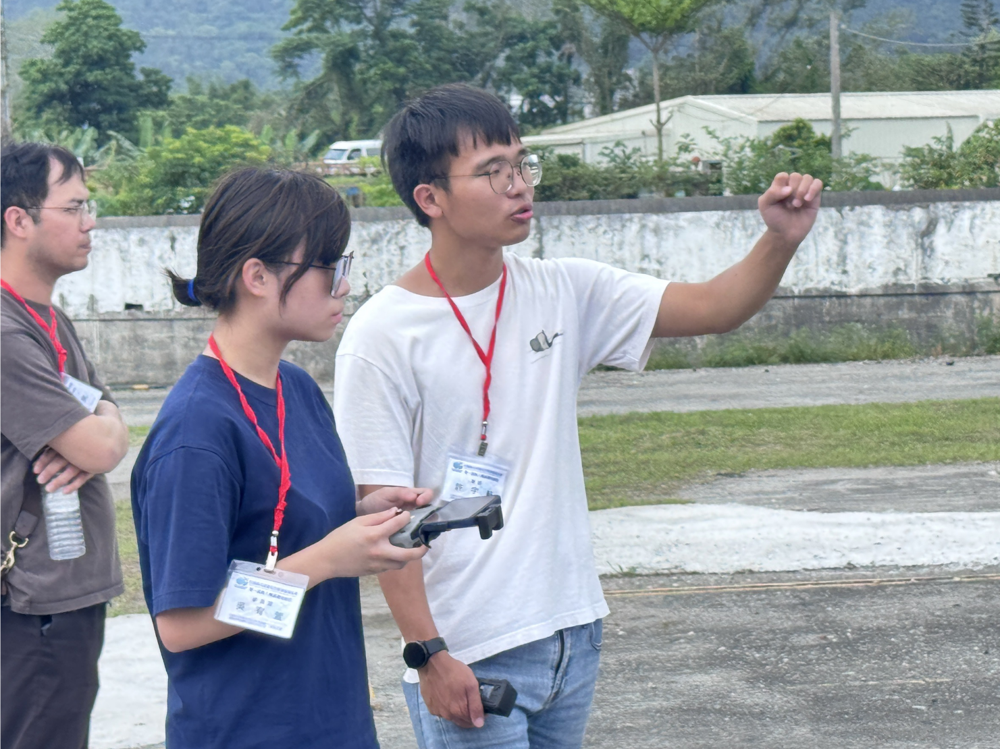下午的術科練習尤其札實，不僅須操作無人機起降，甚至災情模擬到地貌測繪，操作過程需精準掌控、因應風速與地形調整飛行姿態，在實務中須快速判斷與調整。亦接觸到機器狗的應用展示，了解其於地形踏查與運輸的穩定性。
未來若能在電機系深化感測控制與機電整合技術，我期待能將這份興趣實踐於智慧載具的跨域應用之中。
 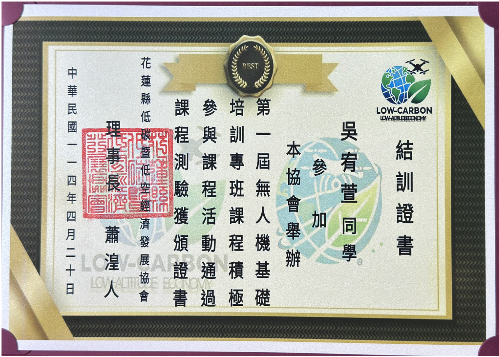
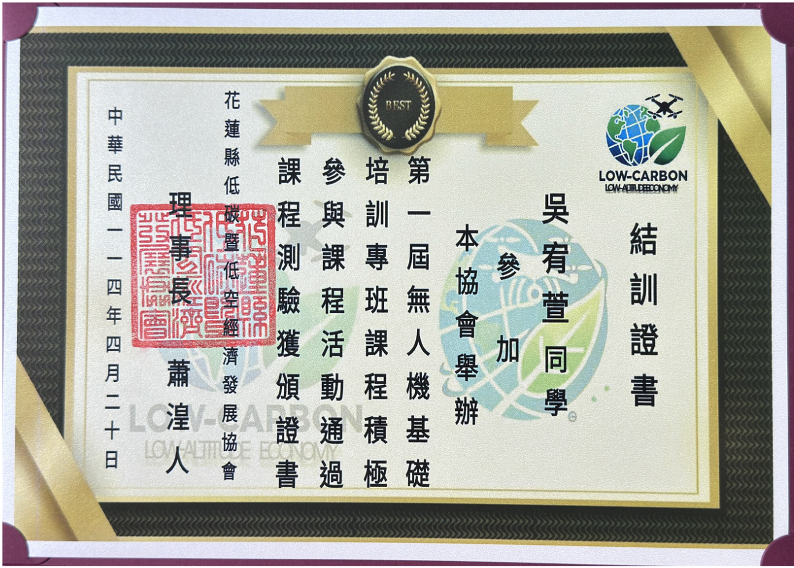
TEL x AI 自走車工作坊
上午的課程非常適合初次接觸RK-JetBot的學員。透過硬體結構的介紹與基礎操作的實作，我對JetBot的功能有了全面的了解，尤其是透過Jupyter Lab進行遙控操作的部分，非常直觀且有趣。課程中的注意事項，例如程式開發時應該要如何測試及鏡頭模組與開發版的連接方式，讓我更加重視硬體保護。
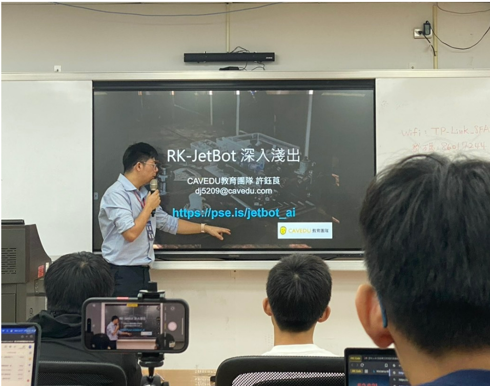 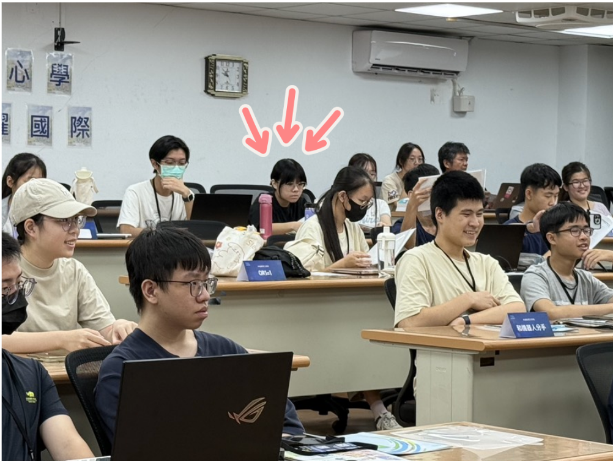 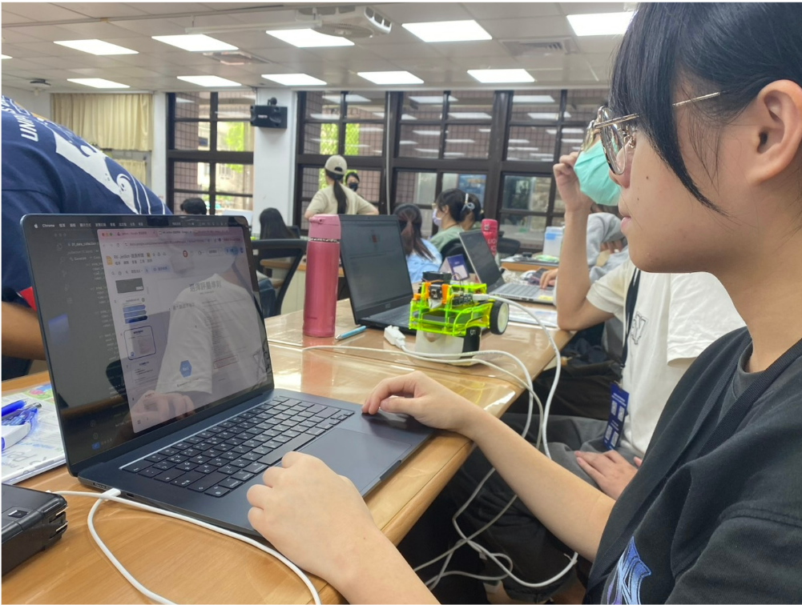下午的課程是上午基礎操作的延伸，將JetBot應用於道路辨識的場景中，並學到程式是怎麼辨識地圖、車道。課程中對深度學習流程的詳細講解，讓我對資料收集、模型訓練及應用有了更深的理解。實作部分最令我印象深刻，使用JetBot進行道路辨識並自主導航，其中看到JetBot能夠即時根據道路狀況進行最佳化的過程，讓我感到AI技術的強大。
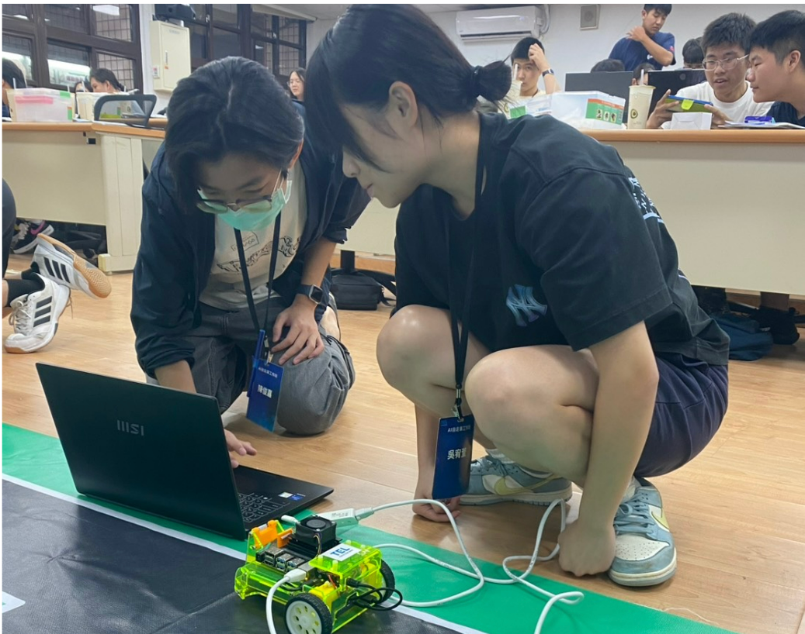 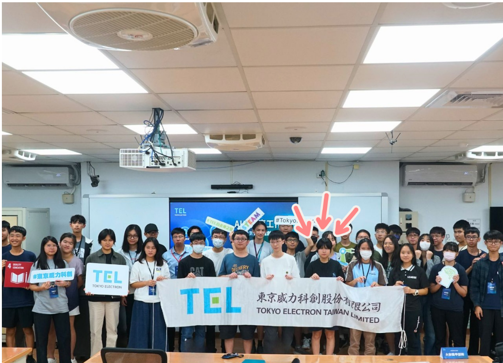 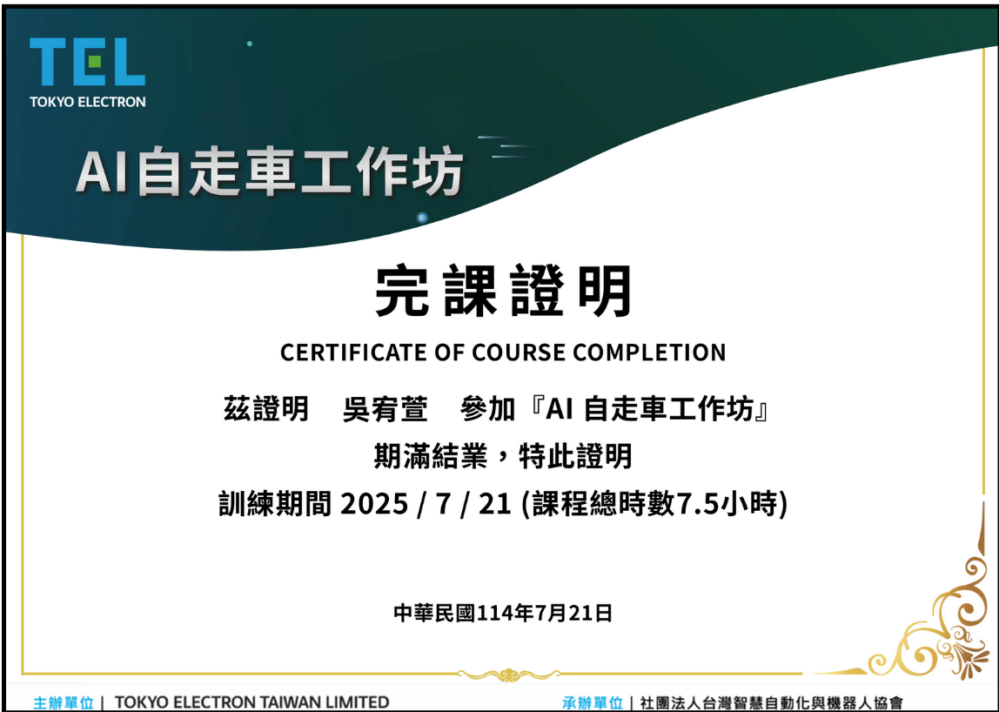